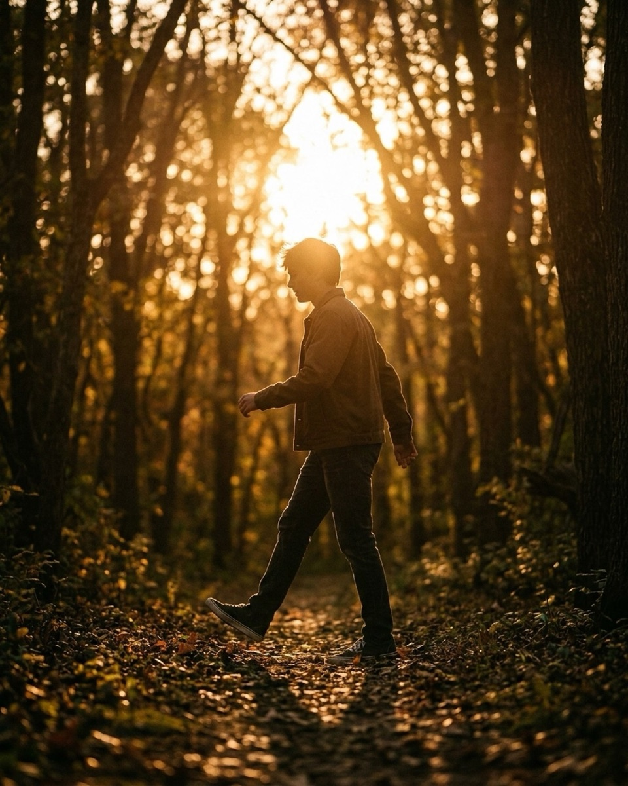
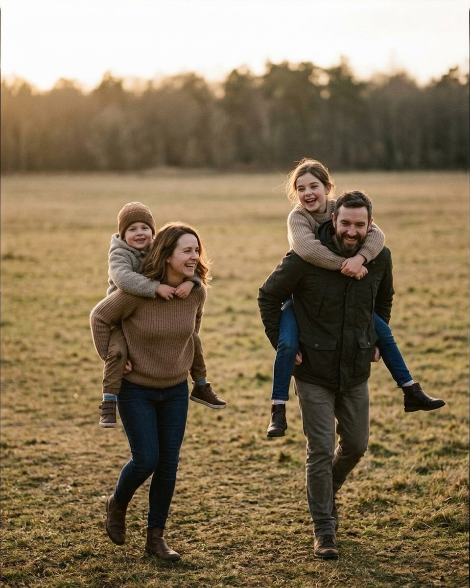
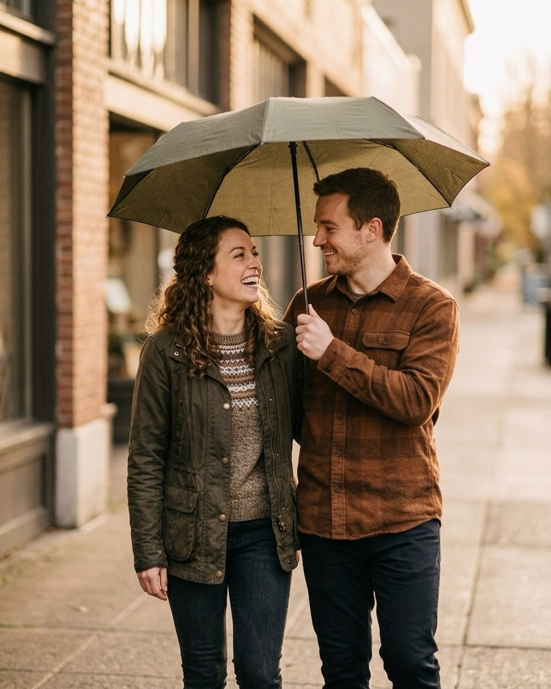
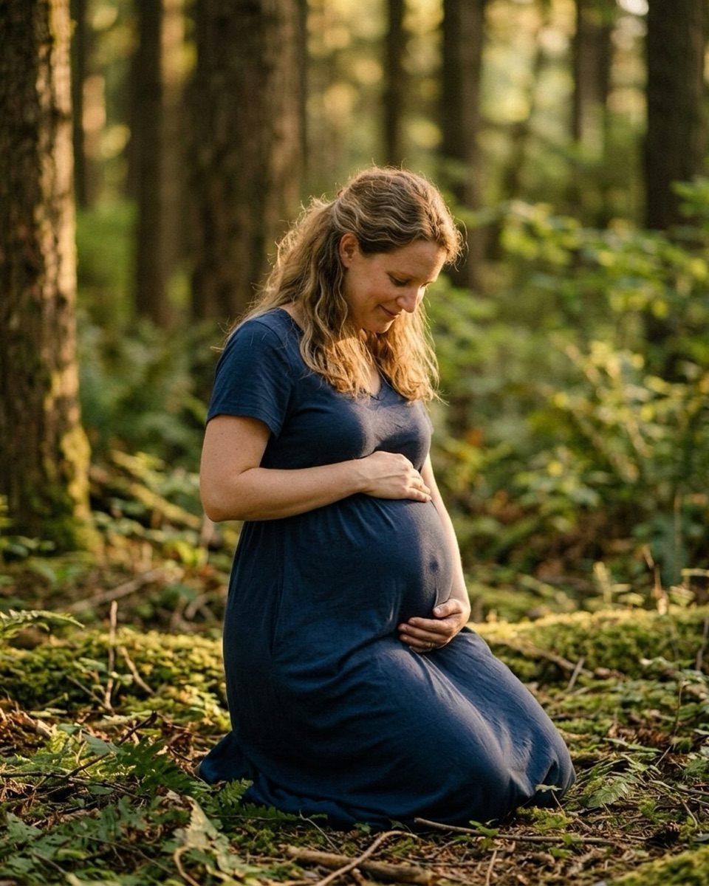
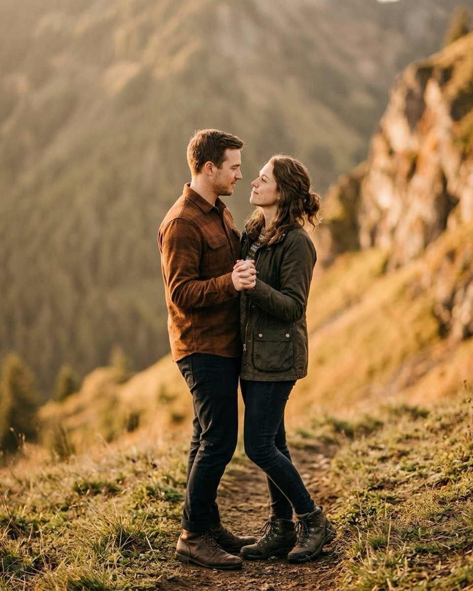
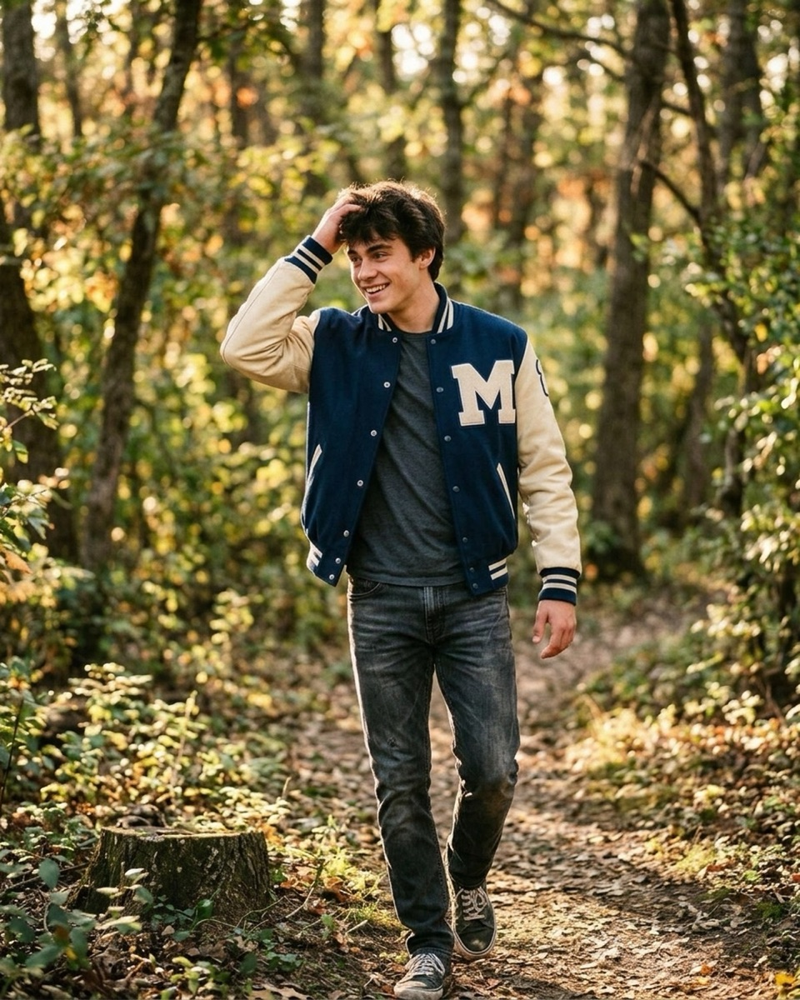

Golden hour prompts: what to say while the light is going
Twenty-five minutes of usable light, sorted into four stages, with the exact words to say at each one — quoted straight from the Prompted catalog.
Golden hour is not an hour. On most evenings you get about twenty-five usable minutes between "the light is nice" and "the light is gone," and every one of them is spent posing someone who has never been told where to put their hands. That's the real constraint behind every prompt below: the line has to land in one breath, because there's no time to explain a mood, adjust a stance, and wait for it to look natural. Say something short, get a reaction, take the frame, move. Prompted computes golden hour for your exact location on-device before you arrive, so you're not guessing at a chart — you already know how many minutes you have left when you say the first line. Everything that follows is sorted the way the light actually moves: sun still high, sun turning into a backlight, sun on the horizon, and the few minutes of afterglow once it's gone. Every prompt is quoted exactly as it appears in the Prompted catalog, alongside the pose it belongs to and where the sun needs to sit when you say it. The reference images below are AI-generated posing references, not real session frames — real galleries are being added through the contributor program as photographers submit their own work.

The first ten minutes (sun still high)
Golden hour starts before the light looks golden. The sun is still a hand-span or two above the horizon, bright enough to squint into, and this is the window most photographers waste warming up instead of shooting. Keep it at your subjects' three-quarter or side angle rather than dead-on, and lean on any shade pocket — a tree line, an awning, a building's shadow — to knock the harshness down without losing the warm color. This is also your best window for movement: running, walking, spinning. The light is still strong enough to freeze motion without a wide-open aperture.

Give the little one a countdown, then launch. I'll be ready.
PlayfulFrom the pose “Piggyback parade field”
Use this in the first few minutes, while the group still has energy to burn and the sun is high enough to freeze the motion. Put the sun to their side, not behind them yet — you want the launch lit, not silhouetted.
Cross your ankles, lean back, and study the clouds.
CalmFrom the pose “Field walk”
A good opener for a senior session before anyone's loosened up. Position them so the sun rakes across from one side — enough to carve out cheekbones and hair without forcing a squint straight into it.
Don't worry about your smile. Look at them and it'll happen on its own.
Nervous clientFrom the pose “Campfire cuddle urban”
Say this early, before the couple has had a chance to get self-conscious. The sun is still bright at this stage, so tuck them into open shade — a doorway, an alley mouth — and let the golden spill in from the open side instead of hitting them directly.
Give the bump a drumroll — gently, they're napping.
PlayfulFrom the pose “Dress flow field”
Use it as one of your first frames, while there's still enough light to underexpose the sky slightly and let the dress read as translucent. Keep the sun at a low three-quarter angle so it skims the fabric instead of blowing it out.
These first minutes are the same ones you'd use to unstick a couple who's gone rigid the second a lens pointed at them — the same logic, in fact, that runs all through what to say when a couple goes stiff. Give a task, not a mood, and let the sun do the flattering while they're busy following instructions.
The middle (backlit, rim light)
Somewhere around the ten-to-fifteen-minute mark, the sun drops low enough to work as a light source instead of a nuisance. This is the backlit stretch — put the sun directly behind your subjects, or just off one shoulder, and let it rim their hair and edges in gold while you meter for their face. It's the most forgiving light of the whole session: it flatters bodies, disguises tired expressions, and turns ordinary gestures into the images everyone actually wants from a golden hour session.

Pull them in by the waist like you've done it a thousand times.
RomanticFrom the pose “Umbrella share”
Place the sun low and directly behind the couple so it rims both their shoulders and the umbrella's edge. Shoot slightly underexposed and let their faces go a touch soft rather than fighting the flare with fill.
Swing the little one on every third step — one, two, wheee.
PlayfulFrom the pose “Look at each other laugh field”
Best once the whole family has a walking rhythm going. Sun low behind them turns the swing into a burst of light and motion — shoot on the upswing, when the child is airborne and everyone's looking up.

Let your eyes go soft and heavy, almost sleepy. Stay.
CalmFrom the pose “Floor lean”
Works best with the sun low through a window or doorway directly behind her, so the outline of the bump catches light while her face stays in soft shadow. Let a few seconds pass in silence before you shoot.
Flip the jacket over your shoulder like it's a movie poster.
PlayfulFrom the pose “Path stroll”
Use it on a straight path with the sun low and behind them as they walk toward you. The jacket flip catches the rim light for a half-second — call the moment out loud, or just fire a burst.
Want the fall mini session shot list?
About 25 poses grouped by family size, each with the words to say. Free PDF.
One email to confirm, one with the PDF. Unsubscribe any time.
The last five minutes (sun on the horizon)
This is the part everyone came for, and it goes fast. The sun is sitting on or just above the horizon line, the color shifts from gold to deep orange, and you have maybe five real minutes before it's gone. Work quickly and simply: put the sun directly behind your subjects for a full silhouette, or let a sliver of it show between two people for a starburst. Don't chase new poses now — use the ones you already blocked earlier and just change the light on them.
Sit however you'd sit if I weren't here.
CalmFrom the pose “Sunset silhouette”
Save this for the very last light, sun low enough to sit right on the horizon behind them. Expose for the sky, let the figure go fully dark, and don't correct the shadow detail — the silhouette is the point.
Kiss the back of their hand like it's 1948.
RomanticFrom the pose “Shoulder lean sunset”
Use it once the sun has dropped to eye level. Position it just behind and between them so a sliver breaks through at the moment of the kiss — that thin starburst is worth more than a clean, fully blocked sun.

You're doing better than you think. Stay exactly like that.
Nervous clientFrom the pose “Close slow sway mountain”
A steadying line for the last few minutes, when a nervous couple can sense the light is running out and starts to rush. Sun low on the horizon behind the ridge line gives you a full minute of usable color even after it looks like it's set.
Point at the bump and mouth 'this was your idea.'
PlayfulFrom the pose “Garden barefoot beach”
Good for the last stretch when everyone's tired and needs a real laugh instead of a posed smile. Keep the sun low and to the side here rather than dead behind her — you want to see the laugh, not just an outline of it.
Pile on the parents like a snow drift.
PlayfulFrom the pose “Walk away holding hands”
Save this for the last usable minutes, sun sitting low and dead center on the path ahead of the family. Shoot from behind and low as they walk into it — the whole group reads as a moving silhouette against the color.
Engagement sessions live almost entirely in this five-minute window, which is exactly the territory covered in engagement session scripts — book the whole shoot around getting here on time rather than trying to stretch the horizon light to fill an hour.
After the sun drops
The sun is gone, but the light isn't — you get several more minutes of soft, shadowless afterglow, plus whatever warm light is spilling through windows or doorways nearby. This is quieter light, better suited to stillness than motion, and it's forgiving of the tired faces and worn-out patience that show up at the end of a session. Use it for your last few frames rather than packing up the moment the sun touches the horizon.

You get veto power on every single frame. You're the editor.
Nervous clientFrom the pose “Window light portrait”
Use this indoors, once you've moved a senior toward a window that's catching the last of the afterglow. The light is soft and even now, so there's no rush and no harsh shadow to hide — say it slowly and mean it.
One breath for you, one for the baby. Repeat.
CalmFrom the pose “Sheer curtain light”
Good for the very end of a maternity session, positioned near a window with the last blue-gold light coming through sheer curtains. The soft, diffused light after sunset needs no adjustment — just give her a second to actually breathe.
Lift their chin and hold there. Don't kiss yet.
RomanticFrom the pose “Lap sit laugh urban”
Works well as a closing frame under string lights or a porch light once natural color has faded to blue. The pause you're asking for buys an extra second of anticipation that reads even in flat, shadowless afterglow.
Everyone find somewhere comfortable to lean on someone else.
CalmFrom the pose “Story time circle forest”
Save this for the last frame of a family session, once everyone's tired and the light has gone soft and even. There's no sun to chase anymore, so let them settle into whatever shape is actually comfortable and shoot that.
Sequencing the whole session by category
The order above isn't arbitrary — it maps to how much each category can tolerate rushing. Families and kids need the highest-energy prompts first, while the sun is still strong enough to freeze motion and before anyone's patience runs out; save the quiet, close-up moments for last, once they've settled. Couples and engagement sessions invert that: warm them up early with something light and low-stakes, then hold your best romantic prompts for the last five minutes on the horizon, where the light does most of the work for you. Maternity sessions want a slow, steady pace throughout — nothing here should ever feel rushed, even when the light is. Seniors sit in between: energetic and playful early, reflective and still once the color deepens. Whatever the category, the fix for a fading window is the same one that runs through fall family photo poses that work in real light and maternity prompts that respect the client — decide your order before the light starts moving, not while you're standing in it.
The Fall Mini Session Shot List
About 25 poses grouped by family size, each with the words to say. A free PDF, sent once you confirm your address.
One email to confirm, one with the PDF. Unsubscribe any time. No selling, no sharing.
Every prompt in this guide is in the app, with the pose it belongs to.
Prompted is the posing app that is only a posing app: 250+ poses, each with word-for-word prompts in four tones, filtered to the light you're standing in. The sun tracker is free forever.
Get Prompted on the App Store